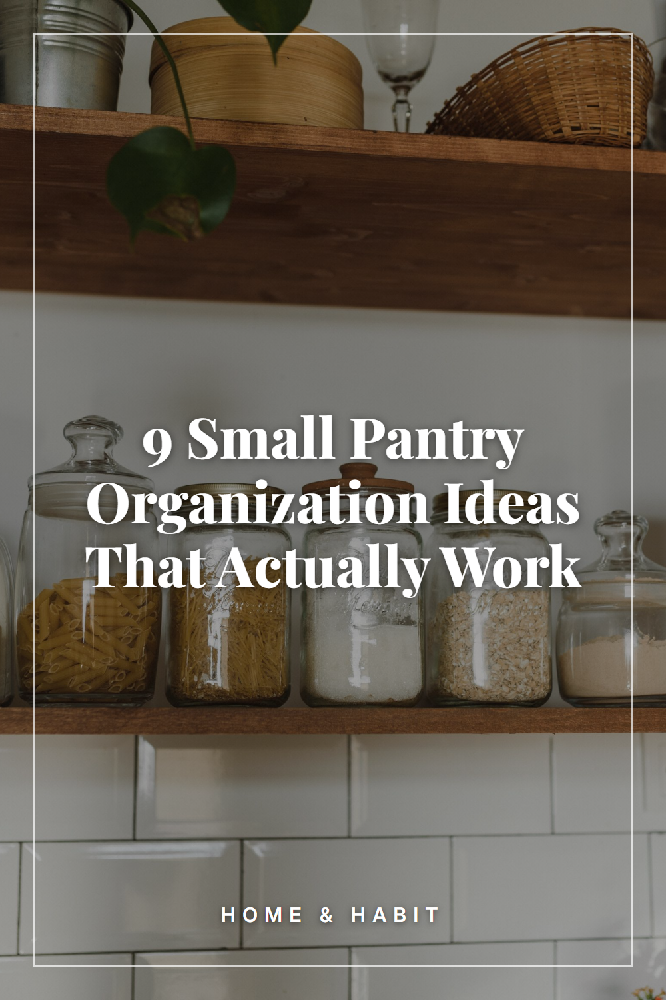

9 Small Pantry Organization Ideas That Actually Work

Small pantry organization ideas to make the most of every shelf: use matching containers, add labels, group items into zones and keep the front clear. Save these pantry organization tips for your next kitchen reset.
Start by emptying one shelf at a time
Take everything off a single shelf, wipe it down and sort the items into groups. Working shelf by shelf keeps the job manageable and shows you what you actually own.
Switch to matching containers
Clear jars or stackable containers for pasta, rice, oats and flour use shelf space more evenly than mixed boxes and bags. Matching shapes stack neatly and make it easy to see what is running low.
Label every container
Add a simple label to the front of each jar or bin so everyone in the house knows what goes where. Labels also make it easier to put things back in the right place.
Group items into zones
Create zones such as baking, breakfast, snacks, canned goods and cooking basics. When each category has its own area, you can find things quickly and spot duplicates before you buy more.
Use baskets and bins for small items
Group packets, pouches and snack bars in open baskets or low bins. Pull a basket out to reach the back, and the loose items stay together instead of scattering across the shelf.
Add shelf risers and tiered racks
A small riser lets you see items in the back row without moving the front ones. Tiered racks work well for cans and spice jars on a deep or narrow shelf.
Use the back of the door
An over-the-door rack or a slim wall-mounted rail holds spices, wraps and small packets. It adds storage without taking any shelf space.
Follow a first-in, first-out order
Place newer purchases behind or beneath older ones so the items you bought first are used first. Keeping the front clear also makes it easier to see what you have.
Do a quick pantry tour each week
Spend a few minutes before your grocery trip checking each zone and putting stray items back. A short, regular routine keeps the system working better than an occasional big clean-out.